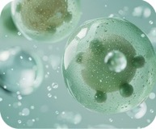

소화 및 대사
인체가 분해하지 못하는 식이섬유를
분해하여 핵심 에너지원을 만들어요.
우리 아이의 장 속에는 또 하나의 우주가 있답니다. 마이크로바이옴은 무엇이고, 왜 초기 관리가 중요할까요?

마이크로바이옴(Microbiome)은 미생물(Microbe)과 생태계(Biome)의 합성어로,
우리 몸에 서식하는 모든 미생물의 유전 정보 전체를 말해요.
단순히 '세균'만 있는 것이 아니라 바이러스, 곰팡이 등 아주 복잡한
생태계를 이루며, 다양하고 많은 유전 정보를 가지고 있어
'제2의 게놈(Second Genome)'이라 불리기도 한답니다.
인체가 분해하지 못하는 식이섬유를
분해하여 핵심 에너지원을 만들어요.
장 점막의 면역 세포들을 자극하여
병원균과 유익균을 구별하는
방어 체계를 학습시켜줘요.
장과 뇌를 연결하는 신호 전달 경로를
통해 기분, 수면, 스트레스 반응 등
뇌 기능과 정서에 도움을 줘요.
마이크로바이옴은, 우리 아이 생애 초기 골든 타임에 적응하여 평생 건강의 기초를 다진답니다.
분만 형태(자연분만/제왕절개)에
따라 물려받는 균총이 달라지고,
우리 아이 장 생태계의 시작점이 돼요.
모유/분유 등 이유식 단계에 따라
미생물 다양성이 폭발적으로 증가하며
평생 건강의 기초를 다져요.
이 시기에 형성된 마이크로바이옴은
성인이 된 이후의 체질 및 건강과
밀접한 연관성을 가진답니다.
* 본 내용은 마이크로바이옴에 대한 일반적인 과학적 사실을 바탕으로 작성되었습니다.
특정 질환의 직접적인 원인이나 치료법을 제시하는 것은 아니며, 개인의 건강 상태에 따라 미생물의 영향력은 달라질 수 있습니다.